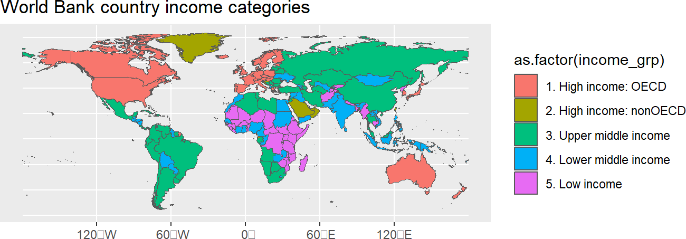
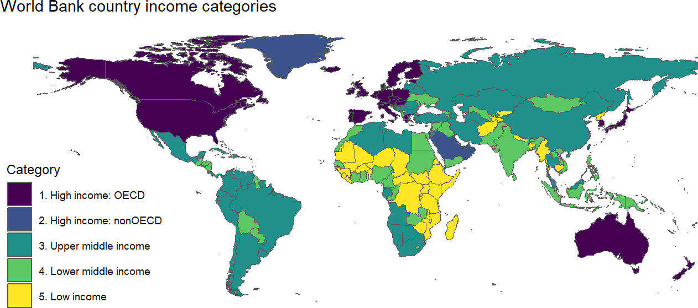
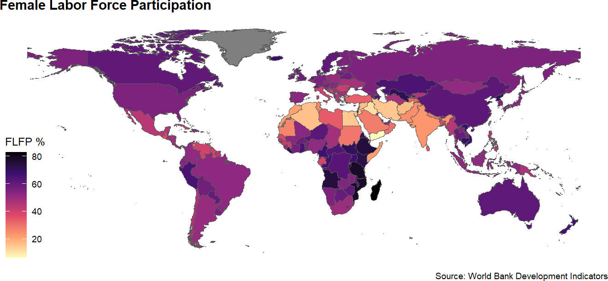
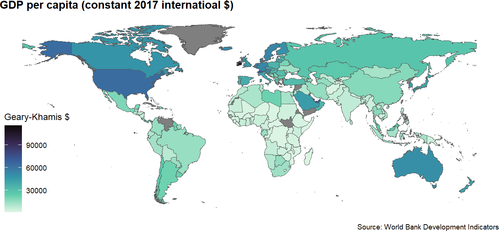

# create a hook to crop maps as recommended by pmassicotte
# must have `magick` and its dependencies installed
knitr::knit_hooks$set(crop = knitr::hook_pdfcrop)Module 3.1
Choropleth Maps
Prework
- Install
rnaturalearth(install.packages("rnaturalearth")) and have a look at the documentation - Install
ggthemes(install.packages("ggthemes"))and have a look at this post) for a brief explanation of how it works - Install
magickand underlying file system to remove whitespace around maps - Then insert this code chunk somewhere in your Quarto document:
Overview
Grabbing country shapes from rnaturalearth
library(rnaturalearth)
library(dplyr)
world_map_df <- ne_countries(scale = "medium", returnclass = "sf") |>
filter(iso_a3 != "ATA") # remove Antarctica
#world_map_df |>
# select and view first 10 columns
#select(1:10) |>
#glimpse()
world_map_df |>
select(geometry) # view contents of last column of df (geometry)Simple feature collection with 234 features and 0 fields
Geometry type: MULTIPOLYGON
Dimension: XY
Bounding box: xmin: -180 ymin: -58.49229 xmax: 180 ymax: 83.59961
CRS: +proj=longlat +datum=WGS84 +no_defs +ellps=WGS84 +towgs84=0,0,0
First 10 features:
geometry
1 MULTIPOLYGON (((-69.89912 1...
2 MULTIPOLYGON (((74.89131 37...
3 MULTIPOLYGON (((14.19082 -5...
4 MULTIPOLYGON (((-63.00122 1...
5 MULTIPOLYGON (((20.06396 42...
6 MULTIPOLYGON (((20.61133 60...
7 MULTIPOLYGON (((1.706055 42...
8 MULTIPOLYGON (((53.92783 24...
9 MULTIPOLYGON (((-64.54917 -...
10 MULTIPOLYGON (((45.55234 40...Make a map with geom_sf()
library(ggplot2)
ggplot(data = world_map_df) +
geom_sf(aes(fill = as.factor(income_grp))) +
labs(title = "World Bank country income categories")
Beautify your map
library(ggthemes)
ggplot(data = world_map_df) +
geom_sf(aes(fill = as.factor(income_grp))) +
labs(
title = "World Bank country income categories",
fill = "Category"
) +
theme_map() +
scale_fill_viridis_d()
Merging rnaturalearth with other data
We are going to use iso2c to do the merge
library(wbstats)
oil_rents_df <- wb_data(c(oil_rents_gdp = "NY.GDP.PETR.RT.ZS"), mrnev = 1)
rents_map_df <- left_join(world_map_df, oil_rents_df, join_by(iso_a2 == iso2c))
rents_map_df |>
select(last_col(5):last_col()) |> #select last 5 columns of df
glimpse() Rows: 234
Columns: 6
$ date <dbl> 2018, 2020, 2020, NA, 2020, NA, NA, 2020, 2020, 2020, 20…
$ oil_rents_gdp <dbl> 0.000000000, 0.001031176, 24.028004023, NA, 1.053952313,…
$ obs_status <chr> NA, NA, NA, NA, NA, NA, NA, NA, NA, NA, NA, NA, NA, NA, …
$ footnote <chr> NA, NA, NA, NA, NA, NA, NA, NA, NA, NA, NA, NA, NA, NA, …
$ last_updated <date> 2023-03-30, 2023-03-30, 2023-03-30, NA, 2023-03-30, NA,…
$ geometry <MULTIPOLYGON [°]> MULTIPOLYGON (((-69.89912 1..., MULTIPOLYGO…ggplot(data = rents_map_df) +
geom_sf(aes(fill = oil_rents_gdp)) + # change var
labs(
title = "Oil rents as a % of GDP", # change title
subtitle = "(Most recent available data)", # add subtitle
fill = "Percent", # change legend title
caption = "Source: World Bank Development Indicators"
) +
theme_map() +
theme(
legend.position = "right",
plot.title = element_text(face = "bold") #,
#legend.title = element_text(size = 8),
#legend.text = element_text(size = 6)
) +
scale_fill_viridis_c( # chg from discrete (_d) to continuous (_c)
option = "magma", # chg to magma theme
labels = scales::label_percent(scale = 1) # add % label for legend
) 
Turn your map into a function
- save this code as an R. script
library(rnaturalearth)
library(dplyr)
library(ggplot2)
library(ggthemes)
library(wbstats)
create_map <- function(var_id, title, legend_title, theme, direction){
ne_countries(scale = "medium", returnclass = "sf") |>
left_join(
wb_data(var_id, mrnev = 1), # change variable id
join_by(iso_a2 == iso2c)
) |>
filter(iso_a3 != "ATA") |>
ggplot() +
geom_sf(aes(fill = eval(parse(text=var_id)))) + # remove quotes
labs(
title = title, # change title
fill = legend_title, # change legend title
caption = "Source: World Bank Development Indicators"
) +
theme_map() +
theme(
plot.title = element_text(face = "bold"),
) +
scale_fill_viridis_c(
option = "magma", # chg theme
direction = direction # change direction of scale
)
}
create_map(var_id = "SL.TLF.CACT.FE.ZS",
title= "Female Labor Force Participation",
legend_title = "FLFP %",
theme = "inferno",
direction = -1)
Use R file as a “source” in another document
source("functions/wb-maps.R", local = knitr::knit_global())Now I write some text here and then I want to show map, so I call the create_map() function that we just made. Let’s say I want to show a different indicator with a different theme, maybe GDP per capita. Let’s search for it using the wb_search() tool:
wb_search("GDP per capita") # A tibble: 24 × 3
indicator_id indicator indic…¹
<chr> <chr> <chr>
1 5.51.01.10.gdp Per capita GDP growth GDP pe…
2 6.0.GDPpc_constant GDP per capita, PPP (constant 2011 international … GDP pe…
3 NV.AGR.PCAP.KD.ZG Real agricultural GDP per capita growth rate (%) The gr…
4 NY.GDP.PCAP.CD GDP per capita (current US$) GDP pe…
5 NY.GDP.PCAP.CN GDP per capita (current LCU) GDP pe…
6 NY.GDP.PCAP.KD GDP per capita (constant 2010 US$) GDP pe…
7 NY.GDP.PCAP.KD.ZG GDP per capita growth (annual %) Annual…
8 NY.GDP.PCAP.KN GDP per capita (constant LCU) GDP pe…
9 NY.GDP.PCAP.PP.CD GDP per capita, PPP (current international $) This i…
10 NY.GDP.PCAP.PP.KD GDP per capita, PPP (constant 2017 international … GDP pe…
# … with 14 more rows, and abbreviated variable name ¹indicator_desc(Note: For an exercise, you could have students use ChatGPT to create a map function and then tweak it to make it work. You could also have them try using a color brewer them instead of viridis).
Now let’s map GDP in constant 2017 international dollars (“NY.GDP.PCAP.PP.KD”) with the mako theme:
create_map(var_id = "NY.GDP.PCAP.PP.KD",
title= "GDP per capita (constant 2017 internatioal $)",
legend_title = "Geary-Khamis $",
theme = "mako",
direction = -1)